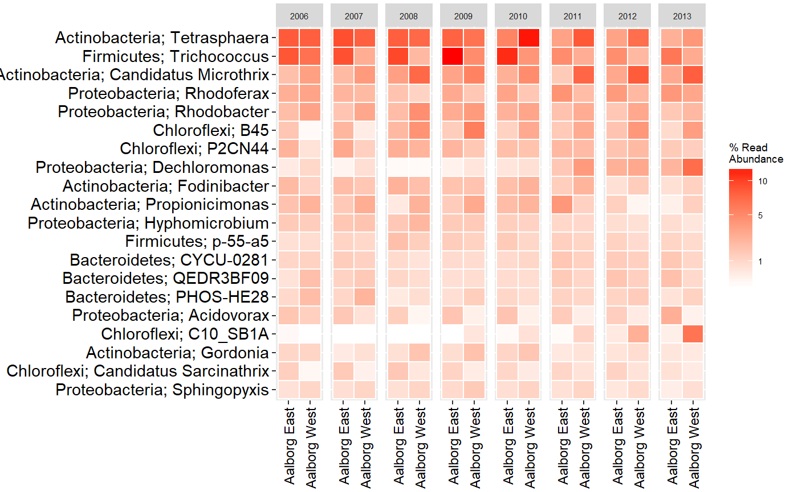

Heatmap
Generates a heatmap of amplicon data by using sample metadata to aggregate samples and taxonomy to aggregate OTUs.
amp_heatmap(data, group_by = "")
Arguments
| data | (required) Data list as loaded with |
|---|---|
| group_by | (recommended) Group the samples by a categorical variable in the metadata. If |
| facet_by | Facet the samples by a categorical variable in the metadata. |
| normalise_by | A variable or a specific sample in the metadata to normalise the counts by. |
| scale_by | Scale the abundances by a variable in the metadata. |
| tax_aggregate | The taxonomic level to aggregate the OTUs. (default: |
| tax_add | Additional taxonomic level(s) to display, e.g. |
| tax_show | The number of taxa to show, or a vector of taxa names. (default: |
| tax_class | Converts a specific phylum to class level instead, e.g. |
| tax_empty | How to show OTUs without taxonomic information. One of the following:
|
| order_x_by | A taxonomy group or vector to order the x-axis by, or |
| order_y_by | A sample or vector to order the y-axis by, or |
| plot_values | (logical) Plot the values on the heatmap or not. (default: |
| plot_legendbreaks | A vector of breaks for the abundance legend, fx |
| plot_colorscale | The type of scale used for the coloring of abundances, either |
| plot_na | (logical) Whether to color missing values with the lowest color in the scale or not. (default: |
| plot_values_size | The size of the plotted values. (default: |
| measure | Calculate and display either |
| min_abundance | All values below this value are given the same color. (default: |
| max_abundance | All values above this value are given the same color. |
| sort_by | Sort the heatmap by a specific value of the |
| color_vector | Vector of colors for the colorscale, e.g. |
| round | Number of digits to show with the values. (default: |
| raw | (logical) Display raw input instead of converting to percentages. (default: |
| textmap | (logical) Return a data frame to print as raw text instead of a ggplot2 object. (default: |
Value
A ggplot2 object, or a data frame if textmap = TRUE.
Normalising data for use in heatmaps
By default the raw read counts in the abundance matrix are normalised (transformed to percentages) by amp_heatmap automatically. This means that the relative abundances shown will be calculated based on the remaining taxa after the subset, not including the removed taxa, if any. To circumvent this, set normalise = TRUE when subsetting with the amp_subset_taxa and amp_subset_samples functions and then set raw = TRUE when using amp_heatmap, see the example below.
data("MiDAS")
subsettedData <- amp_subset_samples(MiDAS,
Plant %in% c("Aalborg West", "Aalborg East"),
normalise = TRUE
)
amp_heatmap(subsettedData,
group_by = "Plant",
tax_aggregate = "Phylum",
tax_add = "Genus",
raw = TRUE
)
Accessing detailed raw data
The complete raw data used to generate any ggplot can always be accessed with ggplot2_object$data when the plot is saved as a ggplot2 object. Additionally, a "textmap" version of the generated heatmap can also be generated by setting textmap = TRUE to only extract the raw data as shown on the particular heatmap, see examples.
Examples
#Load example data data("AalborgWWTPs") #Heatmap grouped by WWTP amp_heatmap(AalborgWWTPs, group_by = "Plant")#Heatmap of 20 most abundant Genera (by mean) grouped by WWTP, split by Year, #values not plotted for visibility, phylum name added and colorscale adjusted manually amp_heatmap(AalborgWWTPs, group_by = "Plant", facet_by = "Year", plot_values = FALSE, tax_show = 20, tax_aggregate = "Genus", tax_add = "Phylum", color_vector = c("white", "red"), plot_colorscale = "sqrt", plot_legendbreaks = c(1, 5, 10))#A raw text version of the heatmap can be printed or saved as a data frame with textmap = TRUE: textmap <- amp_heatmap(AalborgWWTPs, group_by = "Plant", textmap = TRUE) textmap#> Aalborg East Aalborg West #> Proteobacteria 35.8792382 32.5527051 #> Actinobacteria 22.1927890 26.0031275 #> Bacteroidetes 12.3111380 10.6958966 #> Chloroflexi 8.9900161 13.2067263 #> Firmicutes 13.1216083 7.3381502 #> Acidobacteria 1.4051618 2.3210528 #> Chlorobi 1.1445542 2.2936892 #> Saccharibacteria 1.0040566 1.3986096 #> Planctomycetes 0.9639946 0.9926918 #> Nitrospirae 0.1592297 0.4871583